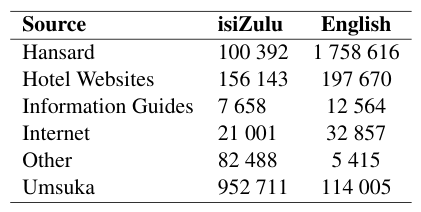
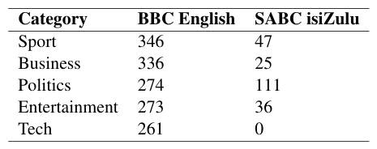
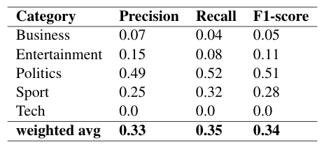

RAIL 2023Traduction automatique
Représentation interlingue non supervisée de plongements lexicaux pour l'anglais-isiZulu
Traduction automatique, non relue par un humain. L'article original est la version de référence ; les phrases soulignées sont celles dont les contrôles automatiques n'étaient pas sûrs.
Proceedings of the Fourth workshop on Resources for African Indigenous Languages (RAIL 2023).
Traduction par Ernst van Gassen (Arktos AI Lab), sous licence CC BY 4.0 comme l'original. Réutilisation permise, y compris commerciale, avec attribution. Les auteurs originaux n'ont pas relu ni approuvé cette traduction.
Texte brut réutilisable, avec sa licence : Français · LICENCE
Affiliations
Derwin Ngomane1, Vukosi Marivate1,2,3, Jade Abbott2,3, Rooweither Mabuya3,4
1Department of Computer Science, University of Pretoria
2Lelapa AI; 3Masakhane NLP
4South African Centre for Digital Language Resources, North-West University
Adresses e-mail retirées pour la protection de la vie privée. Elles figurent dans le PDF original.
Résumé
Dans cette étude, nous examinons l'efficacité de l'utilisation de plongements lexicaux interlingues pour l'apprentissage par transfert zero-shot entre une langue disposant de ressources abondantes, l'anglais, et une langue aux ressources limitées, l'isiZulu. L'isiZulu fait partie de la famille des langues Nguni d'Afrique du Sud, qui se caractérise par une morphologie agglutinante complexe. Nous utilisons VecMap, un outil open source, pour obtenir des plongements lexicaux interlingues. Pour effectuer une évaluation extrinsèque de l'efficacité des embeddings, nous entraînons un classificateur de nouvelles sur des données anglaises étiquetées afin de catégoriser des données isiZulu non étiquetées en utilisant l'apprentissage par transfert zéro-shot. Dans notre étude, nous avons constaté que notre modèle avait un score moyen pondéré de F1 de 0,34. Nos résultats démontrent que VecMap génère des plongements lexicaux modulaires dans l'espace interlingue qui ont un impact sur le classifieur en aval utilisé pour l'apprentissage par transfert zero-shot.
1 Introduction
Dans le développement de systèmes égalitaires de traitement automatique des langues (TAL), les plongements lexicaux interlingues gagnent en importance. Selon la théorie de la distribution, les mots qui apparaissent dans des contextes comparables ont des points communs sémantiques (Villegas et al., 2016). En conséquence, les plongements lexicaux ont ouvert la voie à l'avancement des technologies de TAL.
L'utilisation de la représentation par plongements lexicaux a fourni des performances satisfaisantes pour de nombreuses applications de TAL et applications associées (Gutiérrez et Keith, 2018). Les plongements lexicaux ont été utilisés à des fins d'ingénierie des caractéristiques (Tang et al., 2014) et d'apprentissage par transfert (Bataa et Wu, 2019). Les modèles de traduction, les tâches d'analyse de sentiment et les tâches de classification ont tous bénéficié. Ces améliorations concernent principalement les langues riches en ressources, comme l’anglais, en raison de l’abondance de corpus étiquetés dans ces langues. Le manque de corpus étiquetés dans les langues peu dotées a constitué un désavantage pour l'avancement des technologies de TAL dans cet espace.
De nombreuses publications d'actualités en Afrique du Sud sont en anglais même si l'Afrique du Sud compte onze langues officielles (Marivate et al., 2020). Selon les résultats du recensement de 2011 de Statistics South Africa (Stats SA), l'isiZulu était la langue la plus parlée à la maison avec 22,7% de la population l'indiquant comme langue à la maison (Statistics South Africa (Stats SA), 2012). L’isiZulu fait partie des nombreuses langues autochtones d’Afrique du Sud et appartient à la famille des langues Nguni (Dube et Suleman, 2019). La famille des langues nguni se caractérise par sa morphologie agglutinante (Keet et Khumalo, 2016).
L'Afrique du Sud est une nation multilingue où la grande majorité de la population possède une langue secondaire qu'elle utilise en plus de ses langues primaires. Au cours des années post-apartheid, le pays a connu une croissance de la population des citoyens qui parlent l'anglais comme langue seconde. Ce comportement est également devenu répandu pour isiZulu, où les citoyens ont ajouté isiZulu comme langue seconde (Posel et Zeller, 2020). Cela souligne l'importance de faire progresser les travaux de TAL pour les langues peu dotées en Afrique du Sud.
Dans ce travail, nous tentons de tirer parti d'un corpus bien doté et d'un corpus peu doté afin d'apprendre des plongements lexicaux interlingues pour l'anglais et l'isiZulu. L'utilisation de plongements lexicaux interlingues nous permettrait d'effectuer un apprentissage par transfert de modèle d'une langue bien dotée vers une langue peu dotée. La tâche pour l'isiZulu est particulièrement difficile en raison de la complexité morphologique de la langue. Par conséquent, nous devons traiter les mots de manière à maximiser la représentation syntaxique et sémantique de l'anglais et de l'isiZulu dans l'espace interlingue.
Dans ce travail, nous visons à répondre aux questions de recherche suivantes:
- Pouvons-nous utiliser des plongements lexicaux monolingues pour l'anglais et l'isiZulu afin de créer des vecteurs de plongement sémantique interlingues pour les deux langues ?
- Pouvons-nous utiliser l'apprentissage par transfert zero-shot dans l'espace interlingue pour utiliser un classifieur d'articles de presse anglais afin de classer des articles en isiZulu ?
De plus, nous introduisons deux nouveaux ensembles de données :
- le jeu de données Umsuka anglais-isiZulu (Mabuya et al., 2021) qui est utilisé dans la création des vecteurs interlingues.
- Un jeu de données de classification d'actualités sud-africaines en isiZulu provenant des données de la South African Broadcasting Corporation (SABC)
Le reste du travail est organisé comme suit: La section 2 discutera du contexte et des travaux antérieurs. La section 3 décrit la méthodologie utilisée pour la bibliothèque VecMap et le classificateur d'apprentissage zero-shot. La section 4 discute des expériences et des résultats. Enfin, des remarques conclusives et des étapes potentielles pour les recherches futures sont discutées dans la section 5.
2 Contexte & Travaux connexes
Les méthodes populaires qui ont été utilisées pour représenter les tokens comme vecteurs ont été le sac de mots (BoW), le TF-IDF (Term Frequency-Inverse Document Frequency) et l'information mutuelle ponctuelle (PMI). Cependant, ces techniques créent des matrices éparses et de grande taille et créent également des vecteurs qui ne capturent pas la sémantique (Villegas et al., 2016).
Les avancées innovantes ont conduit à l'émergence de nouvelles techniques utilisant les réseaux de neurones. Ces méthodes incluent les modèles Word2Vec populaires (Mikolov et al., 2013) et les modèles basés sur l'attention (Vaswani et al., 2017). Ces modèles ont atteint des performances état de l'art sur des tâches d'adaptation et d'apprentissage par transfert en TAL (Devlin et al., 2018).
L'inconvénient des embeddings de mots monolingues est qu'ils ont du mal à transférer entre des langues qui sont dissemblables (Ruder et al., 2019b). Les embeddings de mots multilingues entraînés sur plusieurs langues ont également montré de mauvaises performances pour les langues sous-dotées (Wu et Dredze, 2020).
Des approches d'apprentissage de représentations interlingues ont été proposées pour résoudre ce problème (Ruder et al., 2019a). Il existe deux types de méthodes de plongement lexical interlingue : les approches par mappage et les approches post-hoc (Ruder et al., 2019a). Les premières approches de mappage nécessitaient l'utilisation d'un dictionnaire de mappage bilingue entre les langues étudiées, mais des améliorations récentes ont introduit des méthodes adverses. Les approches adverses supposent que les espaces monolingues d'entrée sont isomorphes et réduisent ainsi la nécessité d'un dictionnaire de mappage bilingue (Ruder et al., 2019a). Cependant, il a été démontré que les méthodes adverses fonctionnent mal lorsque les plongements monolingues ne sont pas isomorphes (Søgaard et al., 2018).
Il a été prouvé que les tâches de TAL en aval bénéficient des plongements lexicaux interlingues. Par exemple, les plongements lexicaux interlingues ont augmenté les performances des tâches de traduction automatique (Conneau et Lample, 2019) et d'étiquetage de catégories grammaticales (POS) (Kim et al., 2017) en tant que stratégie d'apprentissage par transfert.
VecMap a été utilisé pour créer une correspondance entre l'anglais et le gallois et les embeddings résultants ont été utilisés pour entraîner un classificateur de sentiment gallois en apprentissage zéro-shot et few-shot (Espinosa-Anke et al., 2021). Dans le contexte sud-africain, VecMap a été utilisé pour développer un plongement lexical interlingue sepedi-setswana et a adopté une méthode d'évaluation sémantique pour analyser la similarité entre des paires de termes setswana et sepedi (Makgatho et al., 2021) et utilisé dans un défi de systèmes de questions-réponses multilingue bruité pour entraîner un modèle de classification LSTM (Daniel et al., 2019).
L'apprentissage par transfert à coup zéro n'a pas été largement utilisé pour la classification des nouvelles sud-africaines. Marivate et coll. (2020) ont utilisé un corpus annoté de nouvelles locales pour créer un classificateur de nouvelles en setswana et en sepedi. Au lieu d'utiliser des plongements lexicaux statiques comme ceux utilisés par VecMap, l'utilisation de plongements lexicaux contextuels issus d'un modèle BERT affiné a obtenu des résultats impressionnants pour une tâche de reconnaissance d'entités nommées (NER) en apprentissage zero-shot pour l'isiZulu (Wang et al., 2020). Cependant, ce travail nécessiterait un calcul important et n'a pas été appliqué à la classification des nouvelles. À notre connaissance, ceci est le premier travail qui utilise des plongements lexicaux interlingues générés à partir de VecMap pour créer un classifieur d'articles de presse de l'anglais vers l'isiZulu.
3 Méthodologie
Nous discutons de la méthodologie pour le développement des plongements lexicaux interlingues et du classifieur en aval pour la classification de nouvelles.
3.1 Collecte des données & Pré-traitement
Les données utilisées dans cette étude proviennent du dépôt du Centre sud-africain pour les ressources linguistiques numériques. Nous utilisons ces données aux fins de l'entraînement de notre modèle de plongement interlingue. Les données se composent uniquement de données textuelles pour l'anglais et l'isiZulu. Selon la documentation technique, le corpus monolingue en anglais contient 35 686 791 jetons tandis que le corpus isiZulu contient 451 154 jetons. Nous ne considérerons que les catégories de sources qui sont les mêmes entre les langues.
Nous utilisons également le corpus parallèle Umsuka English-isiZulu (Mabuya et al., 2021), qui est un corpus parallèle isiZulu de haute qualité et open-source issu d'un mélange de domaines, prenant en compte à la fois le contexte sud-africain et international. La moitié de l'ensemble de données était un échantillon aléatoire de l'ensemble de données News Crawl qui a ensuite été traduit en isiZulu. L'autre moitié du jeu de données a été échantillonnée à partir de journaux isiZulu (publications Isolezwe, Ilanga et Ezasegagasini Metro), couvrant la période de 2012 à 2016, ainsi que des romans et des nouvelles, qui ont ensuite été traduits en anglais. Des traducteurs professionnels ont été utilisés pour créer l'ensemble de données. Une première étude pilote de 500 phrases a été réalisée avec une assurance qualité effectuée par un linguiste isiZulu pour s'assurer que les exigences de qualité étaient comprises.
Le tableau 1 présente les sources utilisées et le nombre de jetons. Au total, nous avons 1 320 393 et 2 121 127 tokens pour l'isiZulu et l'anglais respectivement.

Tableau 1 : Tokens par source et langue
Nous éliminons les stopwords et enlevons la ponctuation dans les corpus originaux. De plus, nous effectuons la lemmatisation sur le corpus anglais en utilisant le lemmatiseur WordNet (Miller, 1995). Nous avons entraîné le classifieur de nouvelles sur des données de nouvelles de la British Broadcasting Corporation (BBC) provenant de Kaggle. Il y a 1 490 articles en anglais pour l'entraînement et 736 articles en anglais à des fins d'évaluation. Nous utilisons des articles de presse de la SABC pour l'évaluation en isiZulu. Deux locuteurs d'isiZulu ont annoté 219 articles de presse de SABC, qui ont été examinés par un linguiste isiZulu. Le tableau 2 présente la répartition des ensembles de données.

Tableau 2 : Fréquence des catégories
3.2 Embeddings de mots monolingues
Les corpus traités que nous avons décrits dans la Section 3.1, sont utilisés pour développer des embeddings monolingues en utilisant le module Python Gensim. Nous utilisons l'architecture FastText pour gérer la morphologie agglutinante de l'isiZulu (Bojanowski et al., 2017).
Nous générons des vecteurs de 64 dimensions pour chaque jeton dans le corpus avec une taille de fenêtre de contexte de 3. Ces hyperparamètres ont été choisis en raison de la taille limitée du vocabulaire de nos corpus, et il a été démontré qu'une fenêtre de contexte plus courte capture la représentation syntaxique du mot et qu'une fenêtre de contexte plus grande capture plus de représentation thématique (Levy et Goldberg, 2014). Pour démontrer la représentation apprise du corpus, nous utilisons l'Uniform Manifold Approximation and Projection (UMAP) (McInnes et al., 2018) pour visualiser les 10 mots les plus proches des deux corpus monolingues. Les jetons choisis sont "government" pour l'anglais et la traduction en isiZulu "uhulumeni". Dans la Figure 1, nous observons que les tokens les plus proches de « uhulumeni » sont des synonymes de « uhulumeni ». De même, nous observons également la même chose pour "government".

(a) Représentation de "government"

(b) Représentation de « uhulumeni »
Figure 1 : Représentation UMAP des plongements monolingues
3.3 Classificateur d'articles d'actualités
Les plongements lexicaux interlingues générés sont utilisés pour entraîner un classifieur sur le corpus anglais. Nous comparons quatre algorithmes et évaluons leurs performances à l'aide de la validation croisée. Les modèles que nous entraînons sont Naive Bayes, les Machines à Vecteurs de Support, la Régression Logistique et les Machines à Gradient Boosté. Le meilleur modèle est ensuite utilisé pour classer des articles de presse isiZulu non vus dans l'espace de plongement interlingue.
4 Expériences et résultats
Dans cette section du document, nous décrivons les expériences et les résultats menés dans un effort pour répondre aux questions de recherche. Nous décrivons les plongements lexicaux interlingues créés et les expériences menées pour développer le classifieur d'articles de presse.
4.1 Plongements lexicaux interlingues
Nous utilisons la bibliothèque VecMap créée par Artetxe et al. (2018) pour générer les plongements lexicaux interlingues. Dans VecMap, nous employons la méthode d'apprentissage interlingue non supervisée. La représentation UMAP générée par algorithme des 10 mots les plus proches de « government » et de « uhulumeni » est illustrée à la figure 2. Certains des mots des représentations monolingues fournies à la figure 1 ont été conservés par VecMap. Cependant, l'algorithme a développé un regroupement basé sur la langue, à l'exception de l'identification de "powerfully" comme étant plus proche des mots isiZulu.
La modularité est le phénomène par lequel un regroupement par langue se produit dans l'espace interlingue (Fujinuma et al., 2019), comme illustré dans la Figure 2. Fujinuma et al. (2019) affirment que les plongements interlingues qui reflètent la modularité ont un effet négatif sur les tâches en aval.

Figure 2 : Représentation UMAP des embeddings cross-lingues VecMap
4.2 Apprentissage par transfert zero-shot
Cette section présente la tâche d'apprentissage par transfert zero-shot consistant à identifier des titres d'actualité isiZulu à partir d'un classifieur d'actualités en anglais. Nous entraînons initialement notre modèle sur des articles de presse anglais étiquetés en utilisant les plongements lexicaux interlingues pré-générés de la section précédente.
4.2.1 Configuration de l'expérience
Les données d'entrée doivent être converties en leur représentation vectorielle selon les embeddings de mots de VecMap. Puisque chaque jeton a 64 dimensions, nous représentons une phrase comme la moyenne de toutes les représentations vectorielles de jeton. Nous utilisons un vecteur de 64 dimensions nulles pour représenter les tokens qui sont hors vocabulaire.
Nous utilisons 75 % des données pour l'entraînement et 25 % à des fins d'évaluation dans les données BBC en anglais. Afin de sélectionner le meilleur modèle, nous exécutons une validation croisée stratifiée répétée en 5 plis sur les données d'entraînement. Sur la base de la procédure de validation croisée, le modèle LightGBM surpasse tous les autres modèles.
4.2.2 Résultats
Le modèle LightGBM atteint une précision de 76,4% sur l'ensemble d'évaluation. Le classificateur a atteint une précision supérieure à 70% pour la plupart des classes, à l'exception du divertissement qui a obtenu une précision de 68%.

Figure 3: Matrice de confusion de l'ensemble d'évaluation
Nous utilisons le modèle LightGBM pour classer les articles de presse isiZulu. La performance résultante du modèle est présentée dans le Tableau 3.

Tableau 3 : Performance du modèle sur les actualités isiZulu de SABC
Le modèle a eu des performances insatisfaisantes sur l'ensemble des titres. Cependant, comme le montre le Tableau 3, le modèle semble mieux performer pour les titres liés à la politique et obtient un score F1 de 0,51. La politique contient une taille d'échantillon plus importante dans nos données en isiZulu. Les autres titres ont eu une performance plus faible, ce qui peut s'expliquer par la modularité, selon laquelle les plongements interlingues qui se regroupent par langue ont tendance à donner de mauvais résultats pour les tâches en aval (Fujinuma et al., 2019).
5 Conclusion
Dans ce travail, nous utilisons VecMap pour créer des plongements lexicaux interlingues entre l'anglais et l'isiZulu. Nous avons montré que VecMap génère des plongements lexicaux modulaires dans l'espace interlingue grâce aux plongements lexicaux monolingues générés par FastText. Par conséquent, nous générons des plongements interlingues qui sont utilisés pour entraîner un classifieur qui obtient de bonnes performances sur les actualités en anglais. Cependant, nous n'avons pas pu transférer l'apprentissage sur des articles de presse isiZulu non vus.
Dans les travaux futurs, nous aimerions examiner la performance de VecMap en utilisant un corpus plus grand pour isiZulu. De plus, il serait également avantageux d'appliquer la métrique de modularité pour optimiser les hyperparamètres de FastText afin de générer des embeddings monolingues appropriés pour la tâche.
Limites
Dans cette section de l'article, nous décrivons les limites de l'étude. Nous avons fait des choix de conception basés sur le corpus et les ressources disponibles pour rendre la recherche possible.
Le travail présente un corpus de taille limitée pour l'isiZulu. Cela est dû au manque de ressources pour la langue. L'autre travail qui a tenté de construire des embeddings de mots monolingues pour l'isiZulu est celui de Dlamini et al. (2021). Cependant, les résultats n'ont pas été publiés dans une ressource accessible au public qui nous permettrait de comparer les embeddings générés par notre travail.
VecMap ne s'adapte pas bien sans l'utilisation d'un GPU, et donc la recherche hyperparamétrique n'a pas été faite pour ce travail. Cependant, l'utilisation de vecteurs avec 128 dimensions et une taille de fenêtre plus grande de 10 comme suggéré par Ri et Tsuruoka (2020) a entraîné une diminution des performances, même pour les articles de presse anglais.
Nous notons également que le modèle en aval a été entraîné en utilisant des titres d'articles de presse européens, ce qui peut avoir un impact sur la performance d'identification d'événements propres aux actualités sud-africaines.
Contributions de l'auteur
Derwin Ngomane : préparation des données ; analyse formelle ; investigation ; méthodologie ; rédaction de la première version ; révision et édition du texte. Vukosi Marivate : conceptualisation ; préparation des données ; ressources ; supervision ; validation ; révision et édition du texte. Jade Abbott : supervision ; préparation des données ; validation ; révision et édition du texte. Rooweither Mabuya : supervision ; préparation des données ; révision et édition du texte.
Remerciements
Nous aimerions remercier le financement de Facebook (Machine Translation Gift), la Chaire ABSA de Data Science et le programme de bourse de recherche Google.
Notes
1 https://repo.sadilar.org/handle/20.500.12185/466
2 https://repo.sadilar.org/handle/20.500.12185/338
3 https://www.isolezwe.co.za
4 https://ilanganews.co.za/
5 https://www.durban.gov.za/pages/government/documents
6 Liste de mots vides isiZulu : https://github.com/stopwords-iso/stopwords-zu
7 https://www.kaggle.com/c/learn-ai-bbc
8 Données disponibles sur https://github.com/dsfsi/izindaba-zesizulu et https://zenodo.org/record/5674236
9 https://radimrehurek.com/gensim/index.html
10 https://github.com/artetxem/vecmap
Références
Mikel Artetxe, Gorka Labaka, and Eneko Agirre. 2018. A robust self-learning method for fully unsupervised cross-lingual mappings of word embeddings. In Proceedings of the 56th Annual Meeting of the Association for Computational Linguistics (Volume 1: Long Papers), pages 789-798, Melbourne, Australia. Association for Computational Linguistics.
Enkhbold Bataa and Joshua Wu. 2019. An investigation of transfer learning-based sentiment analysis in japanese. arXiv preprint arXiv:1905.09642.
Piotr Bojanowski, Edouard Grave, Armand Joulin, and Tomas Mikolov. 2017. Enriching word vectors with subword information. Transactions of the association for computational linguistics, 5:135-146.
Alexis Conneau and Guillaume Lample. 2019. Cross-lingual language model pre-training. Advances in Neural Information Processing Systems, 32:7059-7069.
Jeanne E Daniel, Willie Brink, Ryan Eloff, and Charles Copley. 2019. Towards automating healthcare question answering in a noisy multilingual low-resource setting. In Proceedings of the 57th Annual Meeting of the Association for Computational Linguistics, pages 948-953.
Jacob Devlin, Ming-Wei Chang, Kenton Lee, and Kristina Toutanova. 2018. BERT: Pre-training of Deep Bidirectional Transformers for Language Understanding. arXiv.
Sibonelo Dlamini, Edgar Jembere, Anban Pillay, and Brett van Niekerk. 2021. isizulu word embeddings. In 2021 Conference on Information Communications Technology and Society (ICTAS), pages 121-126. IEEE.
Meluleki Dube and Hussein Suleman. 2019. Language identification for south african bantu languages using rank order statistics. In International Conference on Asian Digital Libraries, pages 283-289. Springer.
Luis Espinosa-Anke, Geraint Palmer, Padraig Corcoran, Maxim Filimonov, Irena Spasić, and Dawn Knight. 2021. English-welsh cross-lingual embeddings. Applied Sciences, 11(14):6541.
Yoshinari Fujinuma, Jordan Boyd-Graber, and Michael J. Paul. 2019. A resource-free evaluation metric for cross-lingual word embeddings based on graph modularity. arXiv.
Luis Gutiérrez and Brian Keith. 2018. A systematic literature review on word embeddings. In International Conference on Software Process Improvement, pages 132-141. Springer.
C. Maria Keet and Langa Khumalo. 2016. Grammar rules for the isiZulu complex verb. arXiv.
Joo-Kyung Kim, Young-Bum Kim, Ruhi Sarikaya, and Eric Fosler-Lussier. 2017. Cross-lingual transfer learning for pos tagging without cross-lingual resources. In Proceedings of the 2017 conference on empirical methods in natural language processing, pages 2832-2838.
Omer Levy and Yoav Goldberg. 2014. Dependencybased word embeddings. In Proceedings of the 52nd Annual Meeting of the Association for Computational Linguistics (Volume 2: Short Papers), pages 302-308, Baltimore, Maryland. Association for Computational Linguistics.
Rooweither Mabuya, Jade Abbott, and Vukosi Marivate. 2021. Umsuka english - isizulu parallel corpus. Https://doi.org/10.5281/zenodo.5035171.
Mack Makgatho, Vukosi Marivate, Tshephisho Sefara, and Valencia Wagner. 2021. Training cross-lingual embeddings for setswana and sepedi. arXiv preprint arXiv:2111.06230.
Vukosi Marivate, Tshephisho Sefara, Vongani Chabalala, Keamogetswe Makhaya, Tumisho B. Mokgonyane, Rethabile Mokoena, and Abiodun Modupe. 2020. Investigating an approach for low resource language dataset creation, curation and classification: Setswana and sepedi. arXiv.
Leland McInnes, John Healy, Nathaniel Saul, and Lukas Grossberger. 2018. Umap: Uniform manifold approximation and projection. The Journal of Open Source Software, 3(29):861.
Tomas Mikolov, Ilya Sutskever, Kai Chen, Greg S Corrado, and Jeff Dean. 2013. Distributed representations of words and phrases and their compositionality. In Advances in Neural Information Processing Systems, volume 26. Curran Associates, Inc.
George A Miller. 1995. Wordnet: a lexical database for english. Communications of the ACM, 38(11):39-41.
Dorrit Posel and Jochen Zeller. 2020. Language use and language shift in post-apartheid South Africa, pages 288-309. Cambridge University Press Cambridge.
Ryokan Ri and Yoshimasa Tsuruoka. 2020. Revisiting the context window for cross-lingual word embeddings. In Proceedings of the 58th Annual Meeting of the Association for Computational Linguistics, pages 995-1005, Online. Association for Computational Linguistics.
Sebastian Ruder, Anders Søgaard, and Ivan Vulić. 2019a. Unsupervised cross-lingual representation learning. In Proceedings of the 57th Annual Meeting of the Association for Computational Linguistics: Tutorial Abstracts, pages 31-38, Florence, Italy. Association for Computational Linguistics.
Sebastian Ruder, Ivan Vulić, and Anders Søgaard. 2019b. A survey of cross-lingual word embedding models. Journal of Artificial Intelligence Research, 65:569-631.
Anders Søgaard, Sebastian Ruder, and Ivan Vulić. 2018. On the limitations of unsupervised bilingual dictionary induction. In Proceedings of the 56th Annual Meeting of the Association for Computational Linguistics (Volume 1: Long Papers), pages 778-788, Melbourne, Australia. Association for Computational Linguistics.
Statistics South Africa (Stats SA). 2012. The South Africa I know, The Home I understand. https://www.statssa.gov.za/census/census_2011/census_products/NW_Municipal_Report.pdf.pdf.
Duyu Tang, Furu Wei, Nan Yang, Ming Zhou, Ting Liu, and Bing Qin. 2014. Learning sentiment-specific word embedding for Twitter sentiment classification. In Proceedings of the 52nd Annual Meeting of the Association for Computational Linguistics (Volume 1: Long Papers), pages 1555-1565, Baltimore, Maryland. Association for Computational Linguistics.
Ashish Vaswani, Noam Shazeer, Niki Parmar, Jakob Uszkoreit, Llion Jones, Aidan N Gomez, Łukasz Kaiser, and Illia Polosukhin. 2017. Attention is all you need. Advances in neural information processing systems, 30.
María Paula Villegas, María José Garciarena Ucelay, Juan Pablo Fernández, Miguel A Álvarez Carmona, Marcelo Luis Errecalde, and Leticia Cagnina. 2016. Vector-based word representations for sentiment analysis: a comparative study. In XXII Congreso Argentino de Ciencias de la Computación (CACIC 2016).
Zihan Wang, Karthikeyan K, Stephen Mayhew, and Dan Roth. 2020. Extending multilingual BERT to low-resource languages. In Findings of the Association for Computational Linguistics: EMNLP 2020, pages 2649-2656, Online. Association for Computational Linguistics.
Shijie Wu and Mark Dredze. 2020. Are all languages created equal in multilingual BERT? arXiv preprint arXiv:2005.09093.
English et Français
Unsupervised Cross-lingual Word Embedding Representation for English-isiZulu
Représentation interlingue non supervisée de plongements lexicaux pour l'anglais-isiZulu
Affiliations
Derwin Ngomane1, Vukosi Marivate1,2,3, Jade Abbott2,3, Rooweither Mabuya3,4
1Department of Computer Science, University of Pretoria;
2Lelapa AI; 3Masakhane NLP;
4South African Centre for Digital Language Resources, North-West University
, ,
,
Affiliations
Derwin Ngomane1, Vukosi Marivate1,2,3, Jade Abbott2,3, Rooweither Mabuya3,4
1Department of Computer Science, University of Pretoria;
2Lelapa AI; 3Masakhane NLP;
4South African Centre for Digital Language Resources, North-West University
, ,
,
Abstract
Résumé
In this study, we investigate the effectiveness of using cross-lingual word embeddings for zero-shot transfer learning between a language with an abundant resource, English, and a language with limited resource, isiZulu. IsiZulu is a part of the South African Nguni language family, which is characterised by complex agglutinating morphology. We use VecMap, an open source tool, to obtain cross-lingual word embeddings. To perform an extrinsic evaluation of the effectiveness of the embeddings, we train a news classifier on labelled English data in order to categorise unlabelled isiZulu data using zero-shot transfer learning. In our study, we found our model to have a weighted average F1-score of 0.34. Our findings demonstrate that VecMap generates modular word embeddings in the cross-lingual space that have an impact on the downstream classifier used for zero-shot transfer learning.
Dans cette étude, nous examinons l'efficacité de l'utilisation de plongements lexicaux interlingues pour l'apprentissage par transfert zero-shot entre une langue disposant de ressources abondantes, l'anglais, et une langue aux ressources limitées, l'isiZulu. L'isiZulu fait partie de la famille des langues Nguni d'Afrique du Sud, qui se caractérise par une morphologie agglutinante complexe. Nous utilisons VecMap, un outil open source, pour obtenir des plongements lexicaux interlingues. Pour effectuer une évaluation extrinsèque de l'efficacité des embeddings, nous entraînons un classificateur de nouvelles sur des données anglaises étiquetées afin de catégoriser des données isiZulu non étiquetées en utilisant l'apprentissage par transfert zéro-shot. Dans notre étude, nous avons constaté que notre modèle avait un score moyen pondéré de F1 de 0,34. Nos résultats démontrent que VecMap génère des plongements lexicaux modulaires dans l'espace interlingue qui ont un impact sur le classifieur en aval utilisé pour l'apprentissage par transfert zero-shot.
1 Introduction
1 Introduction
In the development of egalitarian Natural Language Processing (NLP) systems, cross-lingual word embeddings are gaining prominence. According to distributional theory, words that appear in comparable contexts have semantic commonalities (Villegas et al., 2016). As a result, word embeddings have paved the way for NLP technology advancement.
Dans le développement de systèmes égalitaires de traitement automatique des langues (TAL), les plongements lexicaux interlingues gagnent en importance. Selon la théorie de la distribution, les mots qui apparaissent dans des contextes comparables ont des points communs sémantiques (Villegas et al., 2016). En conséquence, les plongements lexicaux ont ouvert la voie à l'avancement des technologies de TAL.
The use of word embedding representation has provided satisfactory performance for many NLP applications and associated applications (Gutiérrez and Keith, 2018). Word embeddings have been used for feature engineering (Tang et al., 2014) and transfer learning purposes (Bataa and Wu, 2019). Translation models, sentiment analysis tasks and classification tasks have all benefited. These improvements have been primarily in high-resource languages, such as English, due to the abundance of labelled corpora in these languages. The lack of labelled corpora in low-resourced languages has come at a disadvantage in advancing NLP technologies within this space.
L'utilisation de la représentation par plongements lexicaux a fourni des performances satisfaisantes pour de nombreuses applications de TAL et applications associées (Gutiérrez et Keith, 2018). Les plongements lexicaux ont été utilisés à des fins d'ingénierie des caractéristiques (Tang et al., 2014) et d'apprentissage par transfert (Bataa et Wu, 2019). Les modèles de traduction, les tâches d'analyse de sentiment et les tâches de classification ont tous bénéficié. Ces améliorations concernent principalement les langues riches en ressources, comme l’anglais, en raison de l’abondance de corpus étiquetés dans ces langues. Le manque de corpus étiquetés dans les langues peu dotées a constitué un désavantage pour l'avancement des technologies de TAL dans cet espace.
Many news publications in South Africa are in English even though South Africa has eleven official languages (Marivate et al., 2020). According to the Statistics South Africa (Stats SA) Census 2011 results, isiZulu was the most spoken home language with 22.7% of the population indicating it as a home language (Statistics South Africa (Stats SA), 2012). IsiZulu forms part of the many indigenous languages in South Africa, and belongs to the Nguni family of languages (Dube and Suleman, 2019). The Nguni language family is characterised by their agglutinative morphology (Keet and Khumalo, 2016).
De nombreuses publications d'actualités en Afrique du Sud sont en anglais même si l'Afrique du Sud compte onze langues officielles (Marivate et al., 2020). Selon les résultats du recensement de 2011 de Statistics South Africa (Stats SA), l'isiZulu était la langue la plus parlée à la maison avec 22,7% de la population l'indiquant comme langue à la maison (Statistics South Africa (Stats SA), 2012). L’isiZulu fait partie des nombreuses langues autochtones d’Afrique du Sud et appartient à la famille des langues Nguni (Dube et Suleman, 2019). La famille des langues nguni se caractérise par sa morphologie agglutinante (Keet et Khumalo, 2016).
South Africa is a multilingual nation where the large majority of the population have a secondary language that they use on top of their primary languages. Over the post-apartheid years, the country has seen a population growth of citizens that speak English as a second language. This behaviour has also become prevalent for isiZulu, where citizens have added isiZulu as a second language (Posel and Zeller, 2020). This emphasizes the importance of advancing NLP work for low-resourced languages in South Africa.
L'Afrique du Sud est une nation multilingue où la grande majorité de la population possède une langue secondaire qu'elle utilise en plus de ses langues primaires. Au cours des années post-apartheid, le pays a connu une croissance de la population des citoyens qui parlent l'anglais comme langue seconde. Ce comportement est également devenu répandu pour isiZulu, où les citoyens ont ajouté isiZulu comme langue seconde (Posel et Zeller, 2020). Cela souligne l'importance de faire progresser les travaux de TAL pour les langues peu dotées en Afrique du Sud.
In this work we attempt to take advantage of a high-resource corpus and a low-resource corpus in order to learn cross-lingual word embeddings for English and isiZulu. The use of cross-lingual word embeddings would allow us to perform model transfer learning from a high resource language to a low-resource language. The undertaking for isiZulu is especially challenging due to the morphological complexity of the language. Hence, we have to a handle words in a manner that can maximise syntactic and semantic representation of both English and isiZulu in the cross-lingual space.
Dans ce travail, nous tentons de tirer parti d'un corpus bien doté et d'un corpus peu doté afin d'apprendre des plongements lexicaux interlingues pour l'anglais et l'isiZulu. L'utilisation de plongements lexicaux interlingues nous permettrait d'effectuer un apprentissage par transfert de modèle d'une langue bien dotée vers une langue peu dotée. La tâche pour l'isiZulu est particulièrement difficile en raison de la complexité morphologique de la langue. Par conséquent, nous devons traiter les mots de manière à maximiser la représentation syntaxique et sémantique de l'anglais et de l'isiZulu dans l'espace interlingue.
In this work, we aim to answer the following research questions:
Dans ce travail, nous visons à répondre aux questions de recherche suivantes:
Can we use monolingual word embeddings for English and isiZulu to create cross-lingual semantic embedding vectors for both languages?
Pouvons-nous utiliser des plongements lexicaux monolingues pour l'anglais et l'isiZulu afin de créer des vecteurs de plongement sémantique interlingues pour les deux langues ?
Can we use zero-shot transfer learning in the cross-lingual space to use an English news article classifier to classify isiZulu articles?
Pouvons-nous utiliser l'apprentissage par transfert zero-shot dans l'espace interlingue pour utiliser un classifieur d'articles de presse anglais afin de classer des articles en isiZulu ?
Additionally, we introduce two new datasets:
De plus, nous introduisons deux nouveaux ensembles de données :
the Umsuka English-isiZulu dataset (Mabuya et al., 2021) which is used in the creation of the cross-lingual vectors.
le jeu de données Umsuka anglais-isiZulu (Mabuya et al., 2021) qui est utilisé dans la création des vecteurs interlingues.
An isiZulu South African news classification dataset sourced from the South African Broadcasting Corporation (SABC) data
Un jeu de données de classification d'actualités sud-africaines en isiZulu provenant des données de la South African Broadcasting Corporation (SABC)
The remainder of the work is organised as follows: Section 2 will discuss the background and prior work. Section 3 describes the methodology used for the VecMap library and zero-shot learning classifier. Section 4 discusses the experiments and results. Finally, concluding remarks and potential next steps for future research are discussed in Section 5.
Le reste du travail est organisé comme suit: La section 2 discutera du contexte et des travaux antérieurs. La section 3 décrit la méthodologie utilisée pour la bibliothèque VecMap et le classificateur d'apprentissage zero-shot. La section 4 discute des expériences et des résultats. Enfin, des remarques conclusives et des étapes potentielles pour les recherches futures sont discutées dans la section 5.
2 Background & Related Work
2 Contexte & Travaux connexes
The popular methods that have been used to represent tokens as vectors have been Bag-of-Words (BoW), Term Frequency-Inverse Document Frequency (TF-IDF) and Pointwise Mutual Information (PMI). However, these techniques create sparse and large matrices and also create vectors that do not capture semantics (Villegas et al., 2016).
Les méthodes populaires qui ont été utilisées pour représenter les tokens comme vecteurs ont été le sac de mots (BoW), le TF-IDF (Term Frequency-Inverse Document Frequency) et l'information mutuelle ponctuelle (PMI). Cependant, ces techniques créent des matrices éparses et de grande taille et créent également des vecteurs qui ne capturent pas la sémantique (Villegas et al., 2016).
Innovative advancements have led to the emergence of new techniques using neural networks. These methods include the popular Word2Vec models (Mikolov et al., 2013) and attention based models (Vaswani et al., 2017). These models have achieved state-of-the-art performance on adaption and transfer learning tasks in NLP (Devlin et al., 2018).
Les avancées innovantes ont conduit à l'émergence de nouvelles techniques utilisant les réseaux de neurones. Ces méthodes incluent les modèles Word2Vec populaires (Mikolov et al., 2013) et les modèles basés sur l'attention (Vaswani et al., 2017). Ces modèles ont atteint des performances état de l'art sur des tâches d'adaptation et d'apprentissage par transfert en TAL (Devlin et al., 2018).
The disadvantage of monolingual word embeddings is that they struggle with transferring between languages that are dissimilar (Ruder et al., 2019b). Multilingual word embeddings trained on multiple languages have also shown to perform poorly for low-resource languages (Wu and Dredze, 2020).
L'inconvénient des embeddings de mots monolingues est qu'ils ont du mal à transférer entre des langues qui sont dissemblables (Ruder et al., 2019b). Les embeddings de mots multilingues entraînés sur plusieurs langues ont également montré de mauvaises performances pour les langues sous-dotées (Wu et Dredze, 2020).
Approaches for cross-lingual representation learning have been proposed to address this issue (Ruder et al., 2019a). There are two types of cross-lingual word embedding methods: mapping and post-hoc approaches (Ruder et al., 2019a). Initial mapping approaches required the use of a bilingual mapping dictionary between the languages of study, but recent improvements have introduced adversarial methods. Adversarial approaches presume that the input monolingual spaces are isomorphic and hence reducing the requirement of a bilingual mapping dictionary (Ruder et al., 2019a). However, it has been shown that adverserial methods perform poorly when the monolingual embeddings are not isomorphic (Søgaard et al., 2018).
Des approches d'apprentissage de représentations interlingues ont été proposées pour résoudre ce problème (Ruder et al., 2019a). Il existe deux types de méthodes de plongement lexical interlingue : les approches par mappage et les approches post-hoc (Ruder et al., 2019a). Les premières approches de mappage nécessitaient l'utilisation d'un dictionnaire de mappage bilingue entre les langues étudiées, mais des améliorations récentes ont introduit des méthodes adverses. Les approches adverses supposent que les espaces monolingues d'entrée sont isomorphes et réduisent ainsi la nécessité d'un dictionnaire de mappage bilingue (Ruder et al., 2019a). Cependant, il a été démontré que les méthodes adverses fonctionnent mal lorsque les plongements monolingues ne sont pas isomorphes (Søgaard et al., 2018).
Downstream NLP tasks have been proven to benefit from cross-lingual word embeddings. For example, cross-lingual word embeddings have increased the performance of machine translation (Conneau and Lample, 2019) and Part-of-Speech (POS) tagging (Kim et al., 2017) tasks as a transfer learning strategy.
Il a été prouvé que les tâches de TAL en aval bénéficient des plongements lexicaux interlingues. Par exemple, les plongements lexicaux interlingues ont augmenté les performances des tâches de traduction automatique (Conneau et Lample, 2019) et d'étiquetage de catégories grammaticales (POS) (Kim et al., 2017) en tant que stratégie d'apprentissage par transfert.
VecMap has been used to create a mapping between English and Welsh and the resulting embedding were used to train a zero-shot and fewshot learning Welsh sentiment classifier (Espinosa-Anke et al., 2021). In the South African context, VecMap was used to develop a Sepedi-Setswana cross-lingual word embedding and adopted a semantic assessment method to analyse the similarity between pairs of Setswana and Sepedi terms (Makgatho et al., 2021) and used in a noisy, multilingual question-answering challenge to train an LSTM classification model (Daniel et al., 2019).
VecMap a été utilisé pour créer une correspondance entre l'anglais et le gallois et les embeddings résultants ont été utilisés pour entraîner un classificateur de sentiment gallois en apprentissage zéro-shot et few-shot (Espinosa-Anke et al., 2021). Dans le contexte sud-africain, VecMap a été utilisé pour développer un plongement lexical interlingue sepedi-setswana et a adopté une méthode d'évaluation sémantique pour analyser la similarité entre des paires de termes setswana et sepedi (Makgatho et al., 2021) et utilisé dans un défi de systèmes de questions-réponses multilingue bruité pour entraîner un modèle de classification LSTM (Daniel et al., 2019).
Zero-shot transfer learning has not been widely used for South African news classification. Marivate et al. (2020) used an annotated corpus of local news items to create a news classifier for Setswana and Sepedi. Instead of using static word embedding as those used by VecMap, using contextual word embeddings from a fine-tuned BERT model has achieved impressive results for a zero-shot learning Named Entity Recognition (NER) task for isiZulu (Wang et al., 2020). However, this work would require significant computing and has not been applied to news classification. To our knowledge, this is the first work that uses cross-lingual word embeddings generated from VecMap to create a news article classifier from English to isiZulu.
L'apprentissage par transfert à coup zéro n'a pas été largement utilisé pour la classification des nouvelles sud-africaines. Marivate et coll. (2020) ont utilisé un corpus annoté de nouvelles locales pour créer un classificateur de nouvelles en setswana et en sepedi. Au lieu d'utiliser des plongements lexicaux statiques comme ceux utilisés par VecMap, l'utilisation de plongements lexicaux contextuels issus d'un modèle BERT affiné a obtenu des résultats impressionnants pour une tâche de reconnaissance d'entités nommées (NER) en apprentissage zero-shot pour l'isiZulu (Wang et al., 2020). Cependant, ce travail nécessiterait un calcul important et n'a pas été appliqué à la classification des nouvelles. À notre connaissance, ceci est le premier travail qui utilise des plongements lexicaux interlingues générés à partir de VecMap pour créer un classifieur d'articles de presse de l'anglais vers l'isiZulu.
3 Methodology
3 Méthodologie
We discuss the methodology for the development of the cross-lingual word embeddings and the downstream classifier for news classification.
Nous discutons de la méthodologie pour le développement des plongements lexicaux interlingues et du classifieur en aval pour la classification de nouvelles.
3.1 Data collection & Preprocessing
3.1 Collecte des données & Pré-traitement
The data used in this study is from the South African Centre for Digital Language Resources repository. We use this data for the purposes of training our cross-lingual embedding model. The data consists only of text data for both English and isiZulu. According to the technical documentation, the monolingual English corpus contains 35 686 791 tokens while the isiZulu corpus contains 451 154 tokens. We will only consider the source categories that are the same between the languages.
Les données utilisées dans cette étude proviennent du dépôt du Centre sud-africain pour les ressources linguistiques numériques. Nous utilisons ces données aux fins de l'entraînement de notre modèle de plongement interlingue. Les données se composent uniquement de données textuelles pour l'anglais et l'isiZulu. Selon la documentation technique, le corpus monolingue en anglais contient 35 686 791 jetons tandis que le corpus isiZulu contient 451 154 jetons. Nous ne considérerons que les catégories de sources qui sont les mêmes entre les langues.
We also use the Umsuka English-isiZulu parallel corpus (Mabuya et al., 2021) which is a open-source, high quality isiZulu parallel corpus from a mixture of domains, taking into account both Southern African and international context. Half the dataset was a random sample of the News Crawl dataset which was then translated into isiZulu. The other half of the dataset was sampled from isiZulu newspapers (Isolezwe, Ilanga and Ezasegagasini Metro publications), spanning from 2012 to 2016, as well as novels and short stories, which were then translated into English. Professional translators were used to create the dataset. An initial pilot study of 500 sentences was performed with quality assurance done by an isiZulu linguist to ensure that the quality requirements were understood.
Nous utilisons également le corpus parallèle Umsuka English-isiZulu (Mabuya et al., 2021), qui est un corpus parallèle isiZulu de haute qualité et open-source issu d'un mélange de domaines, prenant en compte à la fois le contexte sud-africain et international. La moitié de l'ensemble de données était un échantillon aléatoire de l'ensemble de données News Crawl qui a ensuite été traduit en isiZulu. L'autre moitié du jeu de données a été échantillonnée à partir de journaux isiZulu (publications Isolezwe, Ilanga et Ezasegagasini Metro), couvrant la période de 2012 à 2016, ainsi que des romans et des nouvelles, qui ont ensuite été traduits en anglais. Des traducteurs professionnels ont été utilisés pour créer l'ensemble de données. Une première étude pilote de 500 phrases a été réalisée avec une assurance qualité effectuée par un linguiste isiZulu pour s'assurer que les exigences de qualité étaient comprises.
Table 1 presents the sources used and the number of tokens. In total, we have 1 320 393 and 2 121 127 tokens for isiZulu and English respectively.
Le tableau 1 présente les sources utilisées et le nombre de jetons. Au total, nous avons 1 320 393 et 2 121 127 tokens pour l'isiZulu et l'anglais respectivement.
Table 1: Tokens by Source and Language
Tableau 1 : Tokens par source et langue
We eliminate stopwords and remove punctuation in the original corpora. Additionally, we perform lemmatization on the English corpus using the WordNet lemmatizer (Miller, 1995). We trained the news classifier on British Broadcasting Corporation (BBC) news data sourced from Kaggle. There are 1 490 English articles for training and 736 English articles evaluation purposes. We use SABC news articles for the isiZulu evaluation. Two isiZulu speakers annotated 219 SABC news articles, which were reviewed by an isiZulu linguist. Table 2 presents the distribution of the datasets.
Nous éliminons les stopwords et enlevons la ponctuation dans les corpus originaux. De plus, nous effectuons la lemmatisation sur le corpus anglais en utilisant le lemmatiseur WordNet (Miller, 1995). Nous avons entraîné le classifieur de nouvelles sur des données de nouvelles de la British Broadcasting Corporation (BBC) provenant de Kaggle. Il y a 1 490 articles en anglais pour l'entraînement et 736 articles en anglais à des fins d'évaluation. Nous utilisons des articles de presse de la SABC pour l'évaluation en isiZulu. Deux locuteurs d'isiZulu ont annoté 219 articles de presse de SABC, qui ont été examinés par un linguiste isiZulu. Le tableau 2 présente la répartition des ensembles de données.
Table 2: Frequency of categories
Tableau 2 : Fréquence des catégories
3.2 Monolingual Word Embeddings
3.2 Embeddings de mots monolingues
The processed corpora that we have described in Section 3.1, are used to develop monolingual embeddings using the Python Gensim module. We make use of the FastText architecture to handle the agglutinative morphology of isiZulu (Bojanowski et al., 2017).
Les corpus traités que nous avons décrits dans la Section 3.1, sont utilisés pour développer des embeddings monolingues en utilisant le module Python Gensim. Nous utilisons l'architecture FastText pour gérer la morphologie agglutinante de l'isiZulu (Bojanowski et al., 2017).
We generate vectors of 64 dimensions for each token in the corpus with a context window size of 3. These hyperparameters were chosen because of the limited vocabulary size of our corpora, and it has been shown that a shorter context window captures the syntactic representation of the word and a larger context window captures more topical representation (Levy and Goldberg, 2014). To demonstrate the learned representation of the corpus we use Uniform Manifold Approximation and Projection (UMAP) (McInnes et al., 2018) to visualise the 10 closest words from both the monolingual corpora. The chosen tokens are "government" for English and the isiZulu translation "uhulumeni". In Figure 1, we observe that the closest tokens to "uhulumeni" are synonyms of "uhulumeni". Similarly, we also observe the same for "government".
Nous générons des vecteurs de 64 dimensions pour chaque jeton dans le corpus avec une taille de fenêtre de contexte de 3. Ces hyperparamètres ont été choisis en raison de la taille limitée du vocabulaire de nos corpus, et il a été démontré qu'une fenêtre de contexte plus courte capture la représentation syntaxique du mot et qu'une fenêtre de contexte plus grande capture plus de représentation thématique (Levy et Goldberg, 2014). Pour démontrer la représentation apprise du corpus, nous utilisons l'Uniform Manifold Approximation and Projection (UMAP) (McInnes et al., 2018) pour visualiser les 10 mots les plus proches des deux corpus monolingues. Les jetons choisis sont "government" pour l'anglais et la traduction en isiZulu "uhulumeni". Dans la Figure 1, nous observons que les tokens les plus proches de « uhulumeni » sont des synonymes de « uhulumeni ». De même, nous observons également la même chose pour "government".
(a) Representation of "government"
(a) Représentation de "government"
(b) Representation of "uhulumeni"
(b) Représentation de « uhulumeni »
Figure 1: UMAP representation of the monolingual embeddings
Figure 1 : Représentation UMAP des plongements monolingues
3.3 News Article Classifier
3.3 Classificateur d'articles d'actualités
The generated cross-lingual word embeddings are used to train a classifier on the English corpus. We compare four algorithms and assess their performance using cross-validation. The models we train are Naive Bayes, Support Vector Machines, Logistic Regression, and Gradient Boosted Machines. The best model is then used to classify unseen isiZulu news articles in the cross-lingual embedding space.
Les plongements lexicaux interlingues générés sont utilisés pour entraîner un classifieur sur le corpus anglais. Nous comparons quatre algorithmes et évaluons leurs performances à l'aide de la validation croisée. Les modèles que nous entraînons sont Naive Bayes, les Machines à Vecteurs de Support, la Régression Logistique et les Machines à Gradient Boosté. Le meilleur modèle est ensuite utilisé pour classer des articles de presse isiZulu non vus dans l'espace de plongement interlingue.
4 Experiments & Results
4 Expériences et résultats
In this section of the paper we describe the experiments and outcomes conducted in an effort to answer the research questions. We describe the created cross-lingual word embeddings and the experiments undertaken to develop the news article classifier.
Dans cette section du document, nous décrivons les expériences et les résultats menés dans un effort pour répondre aux questions de recherche. Nous décrivons les plongements lexicaux interlingues créés et les expériences menées pour développer le classifieur d'articles de presse.
4.1 Cross-lingual Word Embeddings
4.1 Plongements lexicaux interlingues
We use the VecMap library created by Artetxe et al. (2018) to generate the cross-lingual word embeddings. In VecMap, we employ the unsupervised cross-lingual learning method. The algorithm-generated UMAP representation of the 10 closest words to "government" and "uhulumeni" are depicted in Figure 2. Some of the words from the monolingual representations provided in Figure 1 were retained by VecMap. However, the algorithm developed a language-based clustering with the exception of identifying "powerfully" as being closer to isiZulu words.
Nous utilisons la bibliothèque VecMap créée par Artetxe et al. (2018) pour générer les plongements lexicaux interlingues. Dans VecMap, nous employons la méthode d'apprentissage interlingue non supervisée. La représentation UMAP générée par algorithme des 10 mots les plus proches de « government » et de « uhulumeni » est illustrée à la figure 2. Certains des mots des représentations monolingues fournies à la figure 1 ont été conservés par VecMap. Cependant, l'algorithme a développé un regroupement basé sur la langue, à l'exception de l'identification de "powerfully" comme étant plus proche des mots isiZulu.
Modularity is the phenomenon in which language clustering occurs in the cross-lingual space (Fujinuma et al., 2019), as depicted in Figure 2. Fujinuma et al. (2019) claim that cross-lingual embeddings that reflect modularity have a negative effect on downstream tasks.
La modularité est le phénomène par lequel un regroupement par langue se produit dans l'espace interlingue (Fujinuma et al., 2019), comme illustré dans la Figure 2. Fujinuma et al. (2019) affirment que les plongements interlingues qui reflètent la modularité ont un effet négatif sur les tâches en aval.
Figure 2: UMAP representation of the VecMap cross-lingual embeddings
Figure 2 : Représentation UMAP des embeddings cross-lingues VecMap
4.2 Zero-shot transfer learning
4.2 Apprentissage par transfert zero-shot
This section presents the zero-shot transfer learning task of identifying isiZulu news headlines from an English news classifier. We initially train our model on labelled English news articles using the pre-generated cross-lingual word embeddings from the previous section.
Cette section présente la tâche d'apprentissage par transfert zero-shot consistant à identifier des titres d'actualité isiZulu à partir d'un classifieur d'actualités en anglais. Nous entraînons initialement notre modèle sur des articles de presse anglais étiquetés en utilisant les plongements lexicaux interlingues pré-générés de la section précédente.
4.2.1 Experiment Setup
4.2.1 Configuration de l'expérience
The input data needs to be converted into its vector representation as per the word embeddings from VecMap. Since each token has 64 dimensions, we represent a sentence as the average of all the token vector representations. We use a 64 zero dimensional vector to represent tokens that are out of vocabulary.
Les données d'entrée doivent être converties en leur représentation vectorielle selon les embeddings de mots de VecMap. Puisque chaque jeton a 64 dimensions, nous représentons une phrase comme la moyenne de toutes les représentations vectorielles de jeton. Nous utilisons un vecteur de 64 dimensions nulles pour représenter les tokens qui sont hors vocabulaire.
We use 75% of the data for training and 25% for evaluation purposes in the English BBC data. In order to select the best model, we run a repeated 5-fold stratified cross-evaluation on the training data. Based on the cross-validation procedure, the LightGBM model outperforms all the other models.
Nous utilisons 75 % des données pour l'entraînement et 25 % à des fins d'évaluation dans les données BBC en anglais. Afin de sélectionner le meilleur modèle, nous exécutons une validation croisée stratifiée répétée en 5 plis sur les données d'entraînement. Sur la base de la procédure de validation croisée, le modèle LightGBM surpasse tous les autres modèles.
4.2.2 Results
4.2.2 Résultats
The LightGBM model achieves an accuracy of 76.4% on the evaluation set. The classifier achieved an above 70% accuracy for most of the classes, except for entertainment that obtained an accuracy of 68%.
Le modèle LightGBM atteint une précision de 76,4% sur l'ensemble d'évaluation. Le classificateur a atteint une précision supérieure à 70% pour la plupart des classes, à l'exception du divertissement qui a obtenu une précision de 68%.
Figure 3: Confusion matrix of the evaluation set
Figure 3: Matrice de confusion de l'ensemble d'évaluation
We use the LightGBM model to classify the isiZulu news articles. The resulting performance of the model is presented in Table 3.
Nous utilisons le modèle LightGBM pour classer les articles de presse isiZulu. La performance résultante du modèle est présentée dans le Tableau 3.
Table 3: Model performance on SABC isiZulu news
Tableau 3 : Performance du modèle sur les actualités isiZulu de SABC
The model performed unsatisfactory across all the titles. However, as depicted in Table 3 the model seems to perform better for politics related titles and getting an F1-score of 0.51. Politics contains a larger sample size in our isiZulu data. The other titles had a lower performance, which may be explained by modularity, whereby cross-lingual embeddings that cluster on language tend to perform poorly for downstream tasks (Fujinuma et al., 2019).
Le modèle a eu des performances insatisfaisantes sur l'ensemble des titres. Cependant, comme le montre le Tableau 3, le modèle semble mieux performer pour les titres liés à la politique et obtient un score F1 de 0,51. La politique contient une taille d'échantillon plus importante dans nos données en isiZulu. Les autres titres ont eu une performance plus faible, ce qui peut s'expliquer par la modularité, selon laquelle les plongements interlingues qui se regroupent par langue ont tendance à donner de mauvais résultats pour les tâches en aval (Fujinuma et al., 2019).
5 Conclusion
5 Conclusion
In this work we use VecMap to create cross-lingual word embeddings between English and isiZulu. We have shown that VecMap generates modular word embeddings in the cross-lingual space due to the monolingual word embeddings generated by FastText. Hence, we generate cross-lingual embeddings that are used to train a classifier that performs good on English news. However, we were unable to transfer the learning on unseen isiZulu news articles.
Dans ce travail, nous utilisons VecMap pour créer des plongements lexicaux interlingues entre l'anglais et l'isiZulu. Nous avons montré que VecMap génère des plongements lexicaux modulaires dans l'espace interlingue grâce aux plongements lexicaux monolingues générés par FastText. Par conséquent, nous générons des plongements interlingues qui sont utilisés pour entraîner un classifieur qui obtient de bonnes performances sur les actualités en anglais. Cependant, nous n'avons pas pu transférer l'apprentissage sur des articles de presse isiZulu non vus.
In future work, we would like to examine the performance of VecMap using a larger corpus for isiZulu. Additionally, it would also be advantageous to apply the modularity metric to optimize the hyperparameters of FastText in order to generate appropriate monolingual embeddings for the task.
Dans les travaux futurs, nous aimerions examiner la performance de VecMap en utilisant un corpus plus grand pour isiZulu. De plus, il serait également avantageux d'appliquer la métrique de modularité pour optimiser les hyperparamètres de FastText afin de générer des embeddings monolingues appropriés pour la tâche.
Limitations
Limites
In this section of the paper we describe the limitations of the paper. We made design choices based on the corpus and the resources available for making the research possible.
Dans cette section de l'article, nous décrivons les limites de l'étude. Nous avons fait des choix de conception basés sur le corpus et les ressources disponibles pour rendre la recherche possible.
The work presents a corpus that is of limited size for isiZulu. This is due to the lack of resources for the language. The other work that has attempted to build monolingual word embeddings for isiZulu is by Dlamini et al. (2021). However, the results were not published in a publicly accessible resource that would allow us to compare the embeddings generated by our work.
Le travail présente un corpus de taille limitée pour l'isiZulu. Cela est dû au manque de ressources pour la langue. L'autre travail qui a tenté de construire des embeddings de mots monolingues pour l'isiZulu est celui de Dlamini et al. (2021). Cependant, les résultats n'ont pas été publiés dans une ressource accessible au public qui nous permettrait de comparer les embeddings générés par notre travail.
VecMap does not scale well without the use of a GPU, and hence hyperparameter searching was not done for this work. However, using vectors with 128 dimensions and a larger window size of 10 as suggested by Ri and Tsuruoka (2020) resulted in a performance decrease, even for the English news articles.
VecMap ne s'adapte pas bien sans l'utilisation d'un GPU, et donc la recherche hyperparamétrique n'a pas été faite pour ce travail. Cependant, l'utilisation de vecteurs avec 128 dimensions et une taille de fenêtre plus grande de 10 comme suggéré par Ri et Tsuruoka (2020) a entraîné une diminution des performances, même pour les articles de presse anglais.
We also note that downstream model was trained using European news article titles and that can have an impact on the performance of identifying events that are uniquely for South African news.
Nous notons également que le modèle en aval a été entraîné en utilisant des titres d'articles de presse européens, ce qui peut avoir un impact sur la performance d'identification d'événements propres aux actualités sud-africaines.
Author Contributions
Contributions de l'auteur
Derwin Ngomane: Data curation; formal analysis; investigation; methodology; writing - original draft; writing - review and editing. Vukosi Marivate: Conceptualization; data curation; resources; supervision; validation; writing - review and editing. Jade Abbott: Supervision; data curation; validation; writing - review and editing. Rooweither Mabuya: Supervision; data curation; writing - review and editing.
Derwin Ngomane : préparation des données ; analyse formelle ; investigation ; méthodologie ; rédaction de la première version ; révision et édition du texte. Vukosi Marivate : conceptualisation ; préparation des données ; ressources ; supervision ; validation ; révision et édition du texte. Jade Abbott : supervision ; préparation des données ; validation ; révision et édition du texte. Rooweither Mabuya : supervision ; préparation des données ; révision et édition du texte.
Acknowledgements
Remerciements
We would like to acknowledge funding from Facebook (Machine Translation Gift), the ABSA Chair of Data Science and the Google Research scholar program.
Nous aimerions remercier le financement de Facebook (Machine Translation Gift), la Chaire ABSA de Data Science et le programme de bourse de recherche Google.
Notes
Notes
1 https://repo.sadilar.org/handle/20.500.12185/466
2 https://repo.sadilar.org/handle/20.500.12185/338
3 https://www.isolezwe.co.za
4 https://ilanganews.co.za/
5 https://www.durban.gov.za/pages/government/documents
6 List of isiZulu stopwords: https://github.com/stopwords-iso/stopwords-zu
6 Liste de mots vides isiZulu : https://github.com/stopwords-iso/stopwords-zu
7 https://www.kaggle.com/c/learn-ai-bbc
8 Data available at https://github.com/dsfsi/izindaba-zesizulu and https://zenodo.org/record/5674236
8 Données disponibles sur https://github.com/dsfsi/izindaba-zesizulu et https://zenodo.org/record/5674236
9 https://radimrehurek.com/gensim/index.html
10 https://github.com/artetxem/vecmap
References
Références
Mikel Artetxe, Gorka Labaka, and Eneko Agirre. 2018. A robust self-learning method for fully unsupervised cross-lingual mappings of word embeddings. In Proceedings of the 56th Annual Meeting of the Association for Computational Linguistics (Volume 1: Long Papers), pages 789-798, Melbourne, Australia. Association for Computational Linguistics.
Enkhbold Bataa and Joshua Wu. 2019. An investigation of transfer learning-based sentiment analysis in japanese. arXiv preprint arXiv:1905.09642.
Piotr Bojanowski, Edouard Grave, Armand Joulin, and Tomas Mikolov. 2017. Enriching word vectors with subword information. Transactions of the association for computational linguistics, 5:135-146.
Alexis Conneau and Guillaume Lample. 2019. Cross-lingual language model pre-training. Advances in Neural Information Processing Systems, 32:7059-7069.
Jeanne E Daniel, Willie Brink, Ryan Eloff, and Charles Copley. 2019. Towards automating healthcare question answering in a noisy multilingual low-resource setting. In Proceedings of the 57th Annual Meeting of the Association for Computational Linguistics, pages 948-953.
Jacob Devlin, Ming-Wei Chang, Kenton Lee, and Kristina Toutanova. 2018. BERT: Pre-training of Deep Bidirectional Transformers for Language Understanding. arXiv.
Sibonelo Dlamini, Edgar Jembere, Anban Pillay, and Brett van Niekerk. 2021. isizulu word embeddings. In 2021 Conference on Information Communications Technology and Society (ICTAS), pages 121-126. IEEE.
Meluleki Dube and Hussein Suleman. 2019. Language identification for south african bantu languages using rank order statistics. In International Conference on Asian Digital Libraries, pages 283-289. Springer.
Luis Espinosa-Anke, Geraint Palmer, Padraig Corcoran, Maxim Filimonov, Irena Spasić, and Dawn Knight. 2021. English-welsh cross-lingual embeddings. Applied Sciences, 11(14):6541.
Yoshinari Fujinuma, Jordan Boyd-Graber, and Michael J. Paul. 2019. A resource-free evaluation metric for cross-lingual word embeddings based on graph modularity. arXiv.
Luis Gutiérrez and Brian Keith. 2018. A systematic literature review on word embeddings. In International Conference on Software Process Improvement, pages 132-141. Springer.
C. Maria Keet and Langa Khumalo. 2016. Grammar rules for the isiZulu complex verb. arXiv.
Joo-Kyung Kim, Young-Bum Kim, Ruhi Sarikaya, and Eric Fosler-Lussier. 2017. Cross-lingual transfer learning for pos tagging without cross-lingual resources. In Proceedings of the 2017 conference on empirical methods in natural language processing, pages 2832-2838.
Omer Levy and Yoav Goldberg. 2014. Dependencybased word embeddings. In Proceedings of the 52nd Annual Meeting of the Association for Computational Linguistics (Volume 2: Short Papers), pages 302-308, Baltimore, Maryland. Association for Computational Linguistics.
Rooweither Mabuya, Jade Abbott, and Vukosi Marivate. 2021. Umsuka english - isizulu parallel corpus. Https://doi.org/10.5281/zenodo.5035171.
Mack Makgatho, Vukosi Marivate, Tshephisho Sefara, and Valencia Wagner. 2021. Training cross-lingual embeddings for setswana and sepedi. arXiv preprint arXiv:2111.06230.
Vukosi Marivate, Tshephisho Sefara, Vongani Chabalala, Keamogetswe Makhaya, Tumisho B. Mokgonyane, Rethabile Mokoena, and Abiodun Modupe. 2020. Investigating an approach for low resource language dataset creation, curation and classification: Setswana and sepedi. arXiv.
Leland McInnes, John Healy, Nathaniel Saul, and Lukas Grossberger. 2018. Umap: Uniform manifold approximation and projection. The Journal of Open Source Software, 3(29):861.
Tomas Mikolov, Ilya Sutskever, Kai Chen, Greg S Corrado, and Jeff Dean. 2013. Distributed representations of words and phrases and their compositionality. In Advances in Neural Information Processing Systems, volume 26. Curran Associates, Inc.
George A Miller. 1995. Wordnet: a lexical database for english. Communications of the ACM, 38(11):39-41.
Dorrit Posel and Jochen Zeller. 2020. Language use and language shift in post-apartheid South Africa, pages 288-309. Cambridge University Press Cambridge.
Ryokan Ri and Yoshimasa Tsuruoka. 2020. Revisiting the context window for cross-lingual word embeddings. In Proceedings of the 58th Annual Meeting of the Association for Computational Linguistics, pages 995-1005, Online. Association for Computational Linguistics.
Sebastian Ruder, Anders Søgaard, and Ivan Vulić. 2019a. Unsupervised cross-lingual representation learning. In Proceedings of the 57th Annual Meeting of the Association for Computational Linguistics: Tutorial Abstracts, pages 31-38, Florence, Italy. Association for Computational Linguistics.
Sebastian Ruder, Ivan Vulić, and Anders Søgaard. 2019b. A survey of cross-lingual word embedding models. Journal of Artificial Intelligence Research, 65:569-631.
Anders Søgaard, Sebastian Ruder, and Ivan Vulić. 2018. On the limitations of unsupervised bilingual dictionary induction. In Proceedings of the 56th Annual Meeting of the Association for Computational Linguistics (Volume 1: Long Papers), pages 778-788, Melbourne, Australia. Association for Computational Linguistics.
Statistics South Africa (Stats SA). 2012. The South Africa I know, The Home I understand. https://www.statssa.gov.za/census/census_2011/census_products/NW_Municipal_Report.pdf.pdf.
Duyu Tang, Furu Wei, Nan Yang, Ming Zhou, Ting Liu, and Bing Qin. 2014. Learning sentiment-specific word embedding for Twitter sentiment classification. In Proceedings of the 52nd Annual Meeting of the Association for Computational Linguistics (Volume 1: Long Papers), pages 1555-1565, Baltimore, Maryland. Association for Computational Linguistics.
Ashish Vaswani, Noam Shazeer, Niki Parmar, Jakob Uszkoreit, Llion Jones, Aidan N Gomez, Łukasz Kaiser, and Illia Polosukhin. 2017. Attention is all you need. Advances in neural information processing systems, 30.
María Paula Villegas, María José Garciarena Ucelay, Juan Pablo Fernández, Miguel A Álvarez Carmona, Marcelo Luis Errecalde, and Leticia Cagnina. 2016. Vector-based word representations for sentiment analysis: a comparative study. In XXII Congreso Argentino de Ciencias de la Computación (CACIC 2016).
Zihan Wang, Karthikeyan K, Stephen Mayhew, and Dan Roth. 2020. Extending multilingual BERT to low-resource languages. In Findings of the Association for Computational Linguistics: EMNLP 2020, pages 2649-2656, Online. Association for Computational Linguistics.
Shijie Wu and Mark Dredze. 2020. Are all languages created equal in multilingual BERT? arXiv preprint arXiv:2005.09093.
Comment citer
Citez l'article original pour son contenu et ses résultats. Citez la traduction lorsque vous reprenez la formulation traduite.
Citer l'article original
Ngomane, D., Mabuya, R., Abbott, J. et Marivate, V. (2023). Unsupervised Cross-lingual Word Embedding Representation for English-isiZulu. Dans Proceedings of the Fourth workshop on Resources for African Indigenous Languages (RAIL 2023) (p. 11-17). https://doi.org/10.18653/v1/2023.rail-1.2
@inproceedings{ngomane-etal-2023-unsupervised,
title = "Unsupervised Cross-lingual Word Embedding Representation for {E}nglish-isi{Z}ulu",
author = "Ngomane, Derwin and
Mabuya, Rooweither and
Abbott, Jade and
Marivate, Vukosi",
editor = "Mabuya, Rooweither and
Mthobela, Don and
Setaka, Mmasibidi and
Van Zaanen, Menno",
booktitle = "Proceedings of the Fourth workshop on Resources for {A}frican Indigenous Languages ({RAIL} 2023)",
month = may,
year = "2023",
address = "Dubrovnik, Croatia",
publisher = "Association for Computational Linguistics",
url = "https://aclanthology.org/2023.rail-1.2/",
doi = "10.18653/v1/2023.rail-1.2",
pages = "11--17"
}TY - CONF AU - Ngomane, Derwin AU - Mabuya, Rooweither AU - Abbott, Jade AU - Marivate, Vukosi TI - Unsupervised Cross-lingual Word Embedding Representation for English-isiZulu T2 - Proceedings of the Fourth workshop on Resources for African Indigenous Languages (RAIL 2023) PY - 2023 SP - 11 EP - 17 DO - 10.18653/v1/2023.rail-1.2 UR - https://aclanthology.org/2023.rail-1.2/ LA - en ER -
Citer cette traduction
Ngomane, D., Mabuya, R., Abbott, J. et Marivate, V. (2026). Représentation interlingue non supervisée de plongements lexicaux pour l'anglais-isiZulu (E. van Gassen, trad.). Traduction de "Unsupervised Cross-lingual Word Embedding Representation for English-isiZulu" (Proceedings of the Fourth workshop on Resources for African Indigenous Languages (RAIL 2023), 2023). Talitha, Arktos AI Lab. https://talithapapers.com/fr/papers/2023.rail-1.2/
@misc{ngomane-etal-2023-unsupervised-fr,
author = {Derwin Ngomane and Rooweither Mabuya and Jade Abbott and Vukosi Marivate},
translator = {van Gassen, Ernst},
title = {{Représentation interlingue non supervisée de plongements lexicaux pour l'anglais-isiZulu}},
year = {2026},
publisher = {Arktos AI Lab},
language = {french},
url = {https://talithapapers.com/fr/papers/2023.rail-1.2/},
note = {Traduction de Unsupervised Cross-lingual Word Embedding Representation for English-isiZulu (Proceedings of the Fourth workshop on Resources for African Indigenous Languages (RAIL 2023), 2023). Traduction automatique, non relue par un humain.}
}TY - GEN AU - Ngomane, Derwin AU - Mabuya, Rooweither AU - Abbott, Jade AU - Marivate, Vukosi TA - van Gassen, Ernst TI - Représentation interlingue non supervisée de plongements lexicaux pour l'anglais-isiZulu PY - 2026 PB - Arktos AI Lab UR - https://talithapapers.com/fr/papers/2023.rail-1.2/ LA - fr N1 - Traduction de Unsupervised Cross-lingual Word Embedding Representation for English-isiZulu (Proceedings of the Fourth workshop on Resources for African Indigenous Languages (RAIL 2023), 2023). Traduction automatique, non relue par un humain. ER -